My sister lives in the United States (7 words -> 7 terms)
Working with text in Gephi
2017-03-07
last modified: 2023-04-10
== !
Gephi workshops
I organize online workshops and personalized trainings for Gephi, for beginners and experts. To schedule one or to get more information: analysis@exploreyourdata.com.
Presentation of this tutorial
This tutorial explains how to draw "semantic networks" like this one:
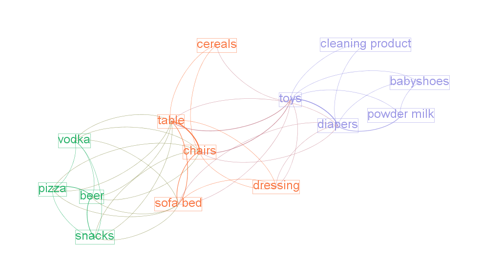
Figure 1. a semantic network
We call "semantic network" a visualization where textual items (words, expressions) are connected to each others, like above.
We will see in turn:
why are semantic networks interesting
how to create a semantic network
tips and tricks to visualize semantic networks in the best possible way in Gephi
Update
Tip | All the operations described in this tutorial are now available as a click-and-point, free web application developed by the author of this tutorial. Upload a text file and get a semantic network in a few seconds. You can then open and explore the network in Gephi. Visit this online service here. |
Why semantic networks?
A text, or many texts, can be hard to summarize.
Drawing a semantic network highlights what are the most frequent terms, how they relate to each other, and reveal the different groups or "clusters" they form.
Often, a cluster of terms characterizes a topic. Hence, converting a text into a semantic network helps detecting topics in the text, from micro-topics to the general themes discussed in the documents.
Semantic networks are regular networks, where:
nodes are words ("USA") or groups of words ("United States of America")
relations are, usually, signifying co-occurrences: two words are connected if they appear in the same document, or in the same paragraph, or same sentence… you decide.
It means that if you have a textual network, you can visualize it with Gephi just like any other network.
Yet, not everything is the same, and this tutorial provides tips and tricks on why textual data can be a bit different than other data.
Choosing what a "term" is in a semantic network
The starting point can be: a term is a single word. So in this sentence, we would have 7 terms:
This means that each single term is a meaningful semantic unit.
This approach is simple but not great. Look again at the sentence:
My sister lives in the United States
My,in,theare frequent terms which have no special significance: they should probably be discardedUnitedandStatesare meaningful separately, but here they should probably be considered together:United Stateslivesis the conjugated form of the verbto live. In a network, it would make sense to regrouplive,livesandlivedas one single node.
Analysts, facing each of these issues, have imagined several solutions:
1. Removing "stopwords"
To remove these little terms without informational value, the most basic approach is to keep a list of them, and remove any word from the text which belongs to this list.
You can find a list of these useless terms in many languages, called "stopwords", on this website.
2. Considering "n-grams"
So, United States should probably be a meaningful unit, not just United and States.
Because United States is composed of 2 terms, it is called a "bi-gram".
Trigrams are interesting as well obviously (eg, chocolate ice cream).
People often stop there, but quadrigrams can be meaningful as well, if less frequent: United States of America, functional magnetic resonance imaging, The New York Times, etc.
Many tools exist to extract n-grams from texts, for example these programs which are under a free license.
2 bis. Considering "noun phrases"
Another approach to go beyond single word terms (United, States) takes a different approach than n-grams. It says:
"delete all in the text except for groups of words made of nouns and adjectives, ending by a noun"
→ (these are called, a bit improperly, "noun phrases")
Take United States: it is a noun (States) preceded by an adjective (United). It will be considered as a valid term.
This approach is interesting (implemented for example in the software Vosviewer), but it has drawbacks:
you need to detect adjectives and nouns in your text. This is language dependent (French put adjectives after nouns, for instance), and the processing is slow for large corpora.
what about verbs, and noun phrases comprising non adjectives, such as "United States of America"? These are not going to be included in the network.
3. Stemming and lemmatization
live, lives, lived: in a semantic network, it is probably useless to have 3 nodes, one for each of these 3 forms of the same root.
Stemming consists in chopping the end of the words, so that here, we would have only
live.Lemmatization is the same, but in a more subtle way: it takes grammar into account. So, "good" and better" would be reduced to "good" because there is the same basic semantic unit behind these two words, even if their lettering differ completely.
A tool performing lemmatization is TextGrid. It has many functions for textual analysis, and lemmatization is explained there.
Should we represent all terms in a semantic network?
We have seen that some words are more interesting than others in a corpus:
stopwords should be removed,
some varieties of words (
lived,lives) could be grouped together (live).sequences of words (
baby phone) can be added because they mean more than their words taken separately (baby,phone)
Once this is done, we have transformed the text into plenty of words to represent. Should they all be included in the network?
Imagine we have a word appearing just once, in a single footnote of a text long of 2,000 pages. Should this word appear? Probably not.
Which rule to apply to keep or leave out a word?
1. Start with: how many words can fit in your visualization?
A starting point can be the number of words you would like to see on a visualization. A ball park figure is 300 words max:
it already fills in all the space of a computer screen.
300 words provides enough information to allow micro-topics of a text to be distinguished
More words can be crammed in a visualization, but in this case the viewer would have to take time zooming in and out, panning to explore the visualization. The viewer transforms into an analyst, instead of a regular reader.
2. Representing only the most frequent terms
If ~ 300 words would fit in the visualization of the network, and the text you start with contains 5,000 different words: which 300 words should be selected?
To visualize the semantic network for a long, single text the straightforward approach consists in picking the 300 most frequent words (or n-grams, see above).
In the case of a collection of texts to visualize (several documents instead of one), two possibilities:
Either you also take the most frequent terms across these documents, like before
Or you can apply a more subtle rule called "tf-idf", detailed below.
The idea with tf-idf is that terms which appear in all documents are not interesting, because they are so ubiquitous.
Example: you retrieve all the webpages mentioning the word Gephi, and then want to visualize the semantic network of the texts contained in these webpages.
→ by definition, all these webpages will mention Gephi, so Gephi will probably be the most frequent term.
→ so your network will end up with a node "Gephi" connected to many other terms, but you actually knew that. Boring.
→ terms used in all web pages are less interesting to you than terms which are used frequently, but not uniformly accross webpages.
Applying the tf-idf correction will highlight terms which are frequently used within some texts, but not used in many texts.
(to go further, here is a webpage giving a simple example: http://www.tfidf.com/)
So, should you visualize the most frequent words in your corpus, or the words which rank highest according to tf-idf?
Both are interesting, as they show a different info. I’d suggest that the simple frequency count is easier to interpret.
tf-idf can be left for specialists of the textual data under consideration, after they have been presented with the simple frequency count version.
Computing connections (edges) in the network
We now have extracted the most interesting / meaningful terms from the text. How to decide which connections make sense between them?
1. Co-occurrences
Connections between terms are usually drawn from co-occurrences: two terms will be connected if they appear next to each other in some pre-defined unit of text:
in the same sentence
in the same paragraph
in the same document (if the corpus is made of several documents)
(note on vocabulary: in the following, we will call this a "unit of text").
For example, in bibliometrics (the study of the publications produced by scientists), this could give:
collect abstracts (short summaries) of all scientific articles discussing "nano-technologies".
so, abstracts are our units of text here.
two terms will be connected if they frequently appear in the same abstracts.
2. What "weight" for the edges?
An edge between two terms will have:
weight of "1" if these two terms co-occur in just one unit of text.
weight of "2" if they co-occur in two units of text.
etc…
The logic is simple, and yet there are some refinements to discuss. It will be up to you to decide what’s preferable:
If 2 terms appear several times in a given unit of text, should their co-occurences be counted several times?
An example to clarify. Let’s imagine that we are interested in webpages discussing nanotechnology. We want to draw the semantic network of the vocabulary used in these web pages.
A co-occurrence is: when 2 terms are used on the same web page.
Among the pages we collected, there is the Wikipedia page discussing nanotechnology:
Nanotechnology ("nanotech") is manipulation of matter on an atomic, molecular, and supramolecular scale. The earliest, widespread description of nanotechnology referred to the particular technological goal of precisely manipulating atoms and molecules for fabrication of macroscale products, also now referred to as molecular nanotechnology
The question is:
should I count only one co-occurrence between
molecularandnanotechnology, because it happened on this one web page? This is called binary countingor should I consider that
molecularappears twice on this page, andnanotechnologythree times, so multiple co-occurrences between these 2 terms should be counted, just on this page already? This is called full counting
There is no exact response, and you can experiment with both possibilities.
If two terms are very frequent, is their co-occurrence really of interest?
Example:
Chun-Yuen Teng, Yu-Ru Lin and Lada Adamic have studied (using Gephi!) the pairing of ingredients in cooking recipes.
So, in their study the unit of text was the "recipe", and the terms in the semantic network where ingredients in all these recipes.
Just because they are so common, some ingredients (like flour, sugar, salt) are bound to appear more frequently in the same recipes (to co-occur), than infrequent ingredients.
The authors of this study chose to highlight complementary ingredients: some ingredients appear often used together in the same recipes, even if they are ingredients which are quite rarely used.
"Complementary" here means that these ingredients have some interesting relationship: when one is used, the other "must" be used as well.
If we just count co-occurrences, this special relationship between infrequent complementary ingredients will be lost: by definition, 2 infrequent ingredients can’t co-occurr often.
To fix this, a solution consists in comparing how many times the 2 ingredients co-occur, with how frequent they are in all recipes:
→ ingredients co-occurring each and every time they are used will have a large edge weight,
→ ingredients co-occuring many times, but also appearing many times in different recipes, will get a low edge weight.
A simple formula does this operation. For ingredients A and B:
weight of edge between A and B = nb of recipes where A & B co-occur divided by (total nb of recipes where A appear x total nb of recipes where B appear)
Logs are often added to this formula, which is called "Pointwise mutual information":
\$PMI = log((p(A, B)) /(p(A) p(B)))\$
We now have nodes and their relations: a semantic network. Let’s see now how to visualize it in Gephi.
Visualizing semantic networks with Gephi
1. Downloading a dataset for this tutorial
We need a dataset to practice. This is a semantic network of 250 terms and 19,613 relations:
download this zip file and unzip it on your computer.
The network was built from the short summaries ("abstracts") of 1484 research articles from the PubMed database of scientific reports, retrieved by conducting this query:
"social neuroscience" OR "neuroeco*" OR "decision neuroscience"
→ The query can be seen at online here. (it comprises more than 1484 results, because some articles have no abstract).
We used Cowo to create the network from these 1484 short pieces of text, based on co-occurrences.
Open the file inside the zip (
pubmed_abstracts_network.gml) in Gephi:
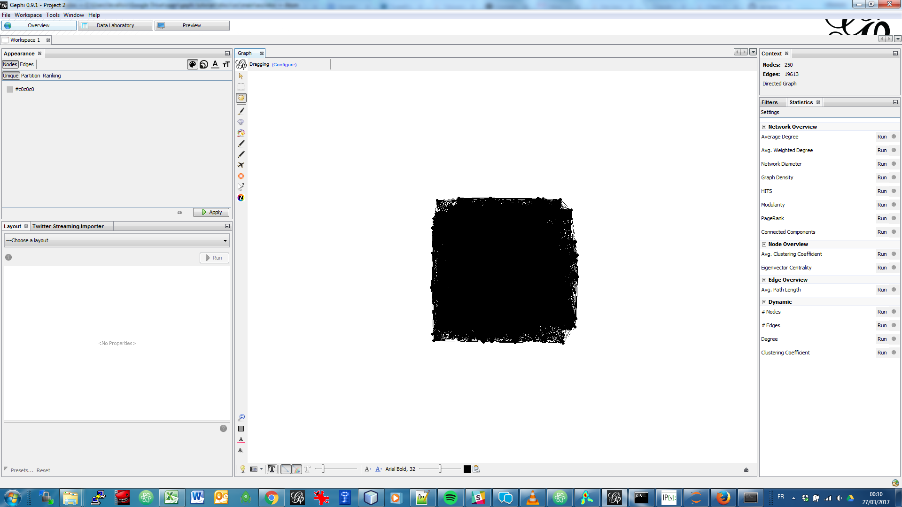
Figure 2. First view of the network
Several steps will make this network intelligible
2. Managing labels size and colors
Showing the labels of the nodes:
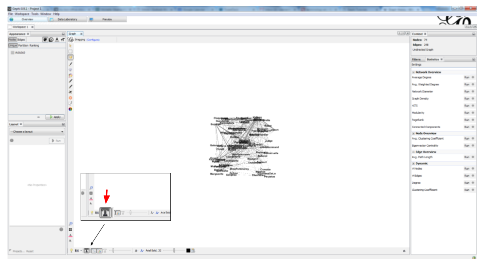
Figure 3. showing node labels
Making the edges (relations) invisible, because they clutter the view
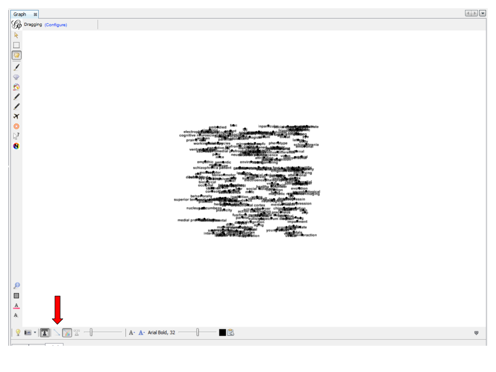
Figure 4. hiding edges
Reducing node size to the minimum (0.5) because we just need labels
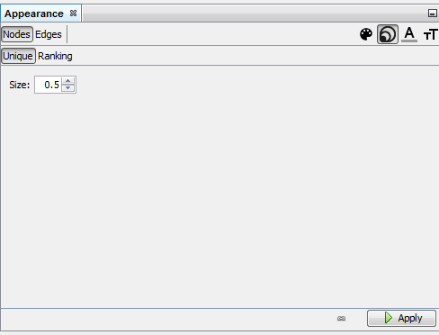
Figure 5. Making nodes disappear
Detect communities with the "modularity" function in the statistics panel
see tutorial 'simple project from A to Z' for this step
Give a different color to each community
→ each group of terms, distinguished by a color, will represent a topic.
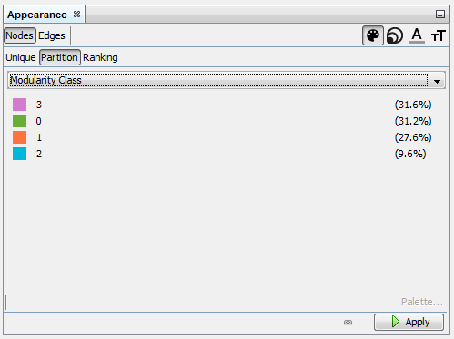
Figure 6. Coloring nodes - first step
We then need to assign this node color to their labels:
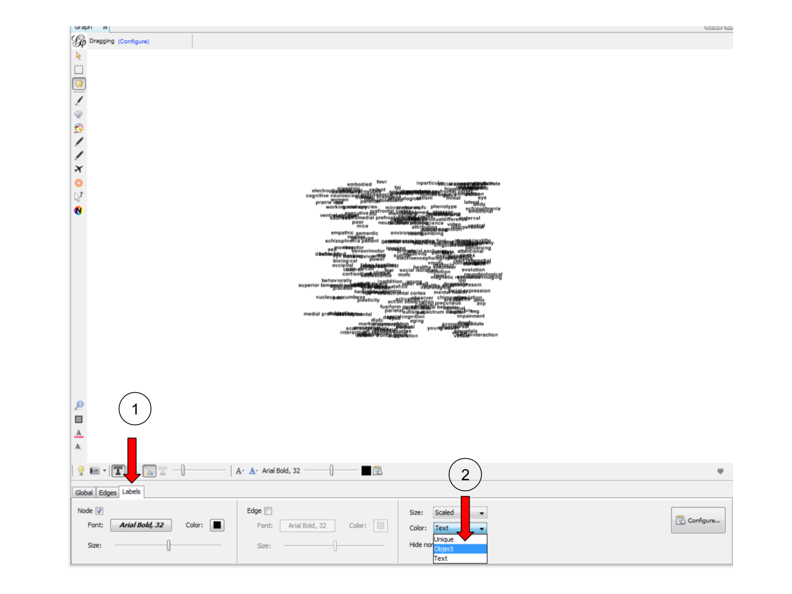
Figure 7. Coloring nodes - second step
3. Tuning the spatialization
Spatializing the network with Force Atlas 2 will place related terms next to each other, because they co-occur:
Some parameters have been modified:
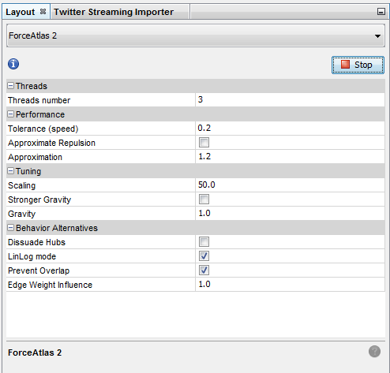
Figure 8. Spatializing the network
The network so far:
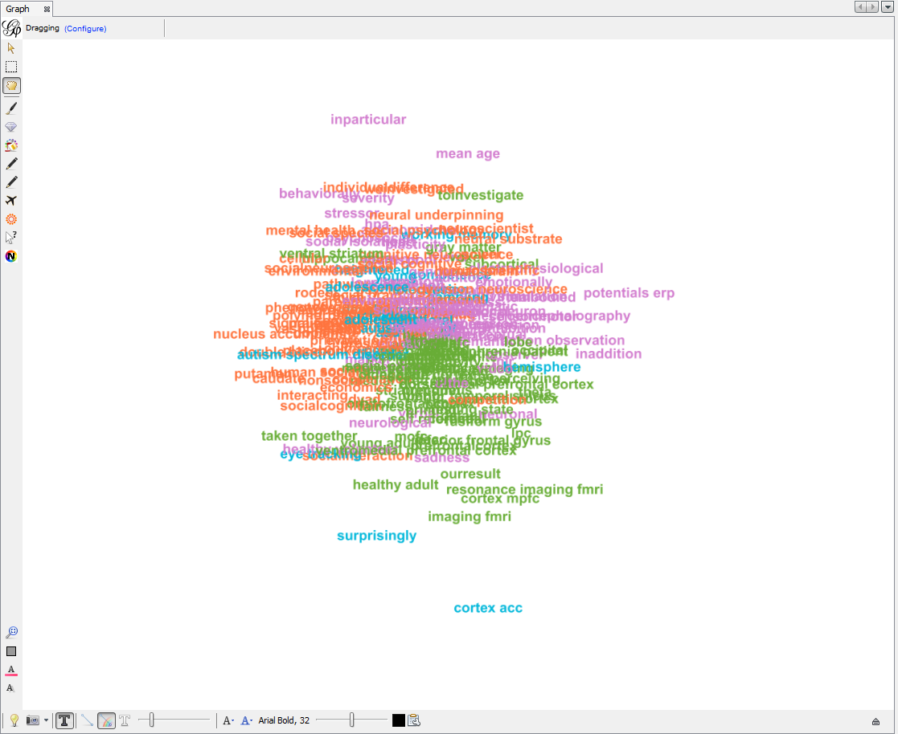
Figure 9. The network - colored and spatialized
Apply 2 more layouts to enhance readability:
"Expansion" to spread nodes (just select it and click on Run a couple of times)
"Label Adjust" to move labels around so that they don’t overlap
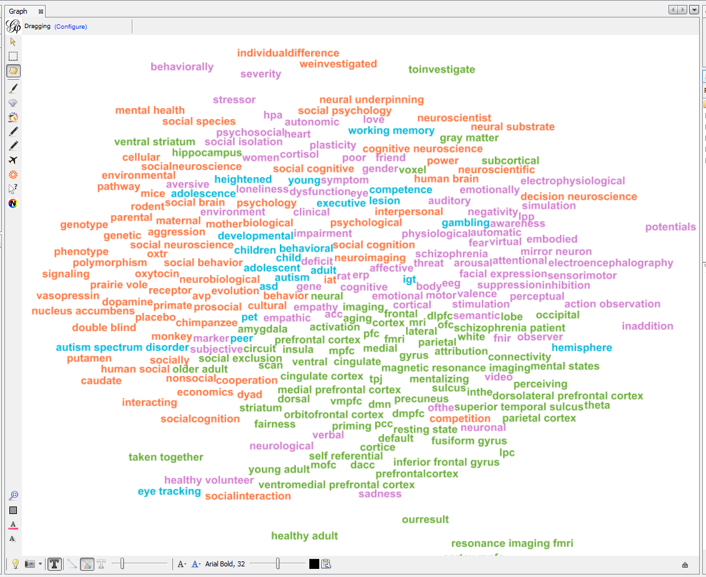
Figure 10. Spreading labels
4. Exporting an image of the network
Switching to the preview panel
A number of parameters must be modified (to show Labels, hide edges, etc.)
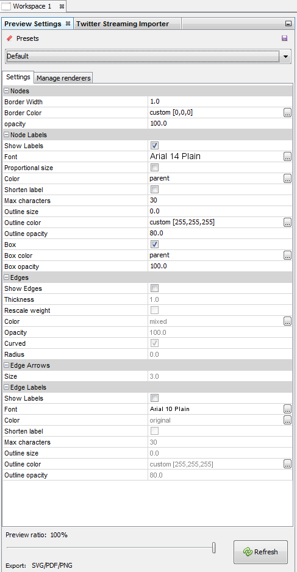
Figure 11. The preview panel
The network is now ready to be exported to pdf, png or svg file formats.
More tutorials on working with semantic networks
Other software / web apps to visualize texts as networks:
to go further
Visit the Gephi group on Facebook to get help,
or visit the website for more tutorials
Give a try to nocodefunctions.com, the web application I develop to create networks for Gephi. Click-and-point, free, no registration needed.